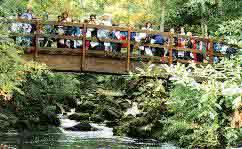

<html>


<!-- Mirrored from file:///C:/Users/annua/Desktop/from desktop/My very primitive website/Ireland/Ispravleno of Glstr/rus/Dostopremichatelnosti/Ness Wood Country Park.htm by HTTrack Website Copier/3.x [XR&CO'2014], Mon, 15 Apr 2024 20:31:07 GMT -->
<head><meta http-equiv="Content-Type" content="text/html; charset=utf-8>

<title>Ness Wood Country Park</title>
</head>

<body link="#ffffff" vlink="#FFFFFF" alink="#FFFFFF">
<cenetr><B>Лесопарк Нисс Вуд (Ness Wood Country Park) графство Лондондерри 
(Londonderry)</B></center>
Эта лесная зона распростерла свои владения на участке прощадью более 25 гектар. 
В этом лесу в основном доминируют дубы, но есть и множество лесных участкой, где 
произрастают и иные породы деревьев, высаживаемые здесь начиная с XVII столетия. 
На реке (River Burntollet), протекающая в этих местах, есть 15 метровый водопад. 
Эта река имеет серию бушующих порогов, протекая в ущелье, образовавшимся во 
время ледникового периода.<br><br>
<center></center><br><hr>

<a href="Navan%20Fort.htm" align="bottom"></a>

<a href="Parke%27s%20Castle.htm" align="bottom"></a>


</body>


<!-- Mirrored from file:///C:/Users/annua/Desktop/from desktop/My very primitive website/Ireland/Ispravleno of Glstr/rus/Dostopremichatelnosti/Ness Wood Country Park.htm by HTTrack Website Copier/3.x [XR&CO'2014], Mon, 15 Apr 2024 20:31:07 GMT -->
</html>